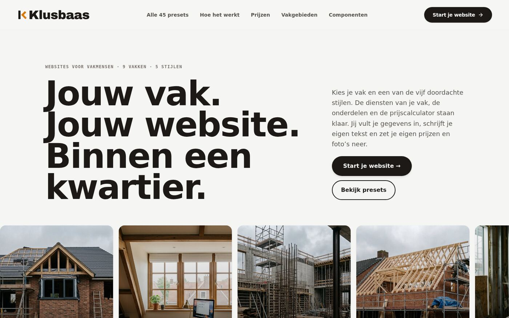
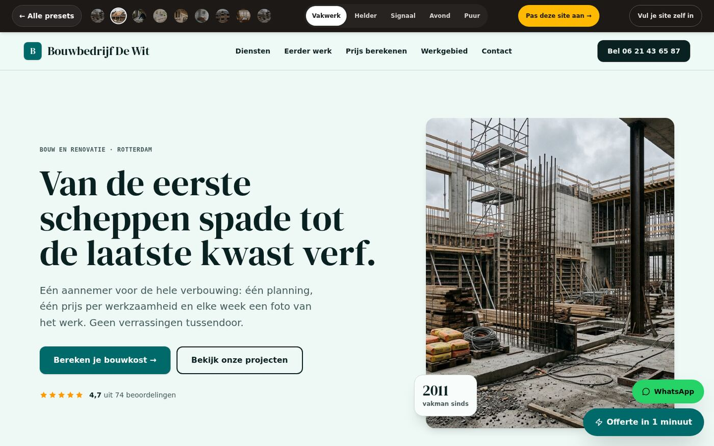
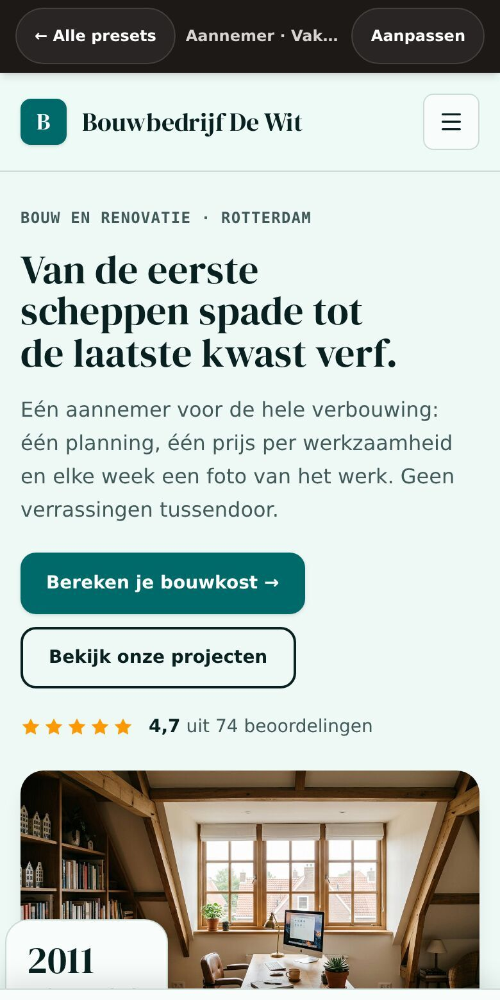

Een frame, geen plaatje
De foto's hangen in een browservenster met de adresbalk erboven. Zo is meteen duidelijk waar de bezoeker naar kijkt: het adres staat erboven, de opmaak is echt.
De showcase van Klusbaas vertelde tot nu toe wat er in de code gebeurde. Dat is goed en nodig — maar het is niet wat een klant wil zien. Deze PR zet de gebouwde site op de pagina: een schermafbeelding per onderdeel, in een frame, klikbaar voor een grote weergave. En de pagina's krijgen een donkere modus, want een nachtelijke schermafbeelding leest prettiger.
Wat er verandert
De pagina's per PR kregen allemaal een rubriek "De site in beeld" met een echte screenshot van de gebouwde site. Het overzicht kreeg een galerij.
De foto's hangen in een browservenster met de adresbalk erboven. Zo is meteen duidelijk waar de bezoeker naar kijkt: het adres staat erboven, de opmaak is echt.
Een klik op een foto opent de lichtkast: de foto op volle grootte, met de uitleg erbij. Met de pijltjestoets wissel je, met Escape sluit je.
Een knop rechtsboven zet de pagina in de donkere modus. Je voorkeur blijft bewaard, en wie liever donker heeft, krijgt hem vanzelf.
Een schermafbeelding van een telefoon staat in een telefoonframe. Zo zie je meteen of iets op 390 pixels breed nog leesbaar is.
Een dunne balk bovenin laat zien hoe ver je bent. Klein, maar je weet waar je bent in een lange pagina.
Een proef controleert elke verwijzing in de showcase. Verwijst een pagina
naar een foto die er niet is, dan faalt bun run check in plaats
van de lezer.
Hoe het eruitziet
Dit is de galerij bovenaan Lavish/index.html: vier momenten uit
de site. Klik er een aan en de lichtkast gaat open.



De bestanden
| Bestand | Wat er verandert |
|---|---|
| Lavish/assets/shots/*.jpg | Negen schermafbeeldingen van de gebouwde site: de homepage, de aannemer, de tijdlijn van de aannemer en de timmerman, het tuinplan, de dakcheck, het overzicht van Klusbaas en het account van de klant. |
| Lavish/assets/style.css | De stijl voor de frames, de telefoon, de lichtkast, de galerij, de donkere modus en de voortgangsbalk. |
| Lavish/assets/app.js | De thema-knop, de voortgangsbalk en de lichtkast met toetsenbordbediening. |
| Lavish/index.html | De galerij bovenaan, de thema-knop en de verwijzing naar PR #67. |
| Lavish/pr-62 t/m pr-66 | Per pagina een rubriek "De site in beeld" met de bijbehorende schermafbeelding. |
| Lavish/pr-67/index.html | Deze pagina. |
| scripts/check-lavish.mjs | De proef die elke verwijzing in de showcase controleert. |
| scripts/check.mjs | De proef komt als stap in bun run check. |
| Lavish/README.md | De regels: schermafbeeldingen mogen, en hoe ze gemaakt worden. |
| CHANGELOG.md | Wat er veranderd is. |
| ROADMAP.md | Rij 7.31 af: de showcase laat de echte site zien. |
De proeven
scripts/check-lavish.mjsscripts/check-lavish.mjsscripts/check-lavish.mjsbun run checkscripts/check.mjsbun run testEerlijk
In de sandbox is Unsplash niet bereikbaar. De foto's in de schermafbeeldingen zijn daarom lokale plaatshouders: de opmaak, de teksten en de opbouw zijn echt, de foto's niet. In de echte site laden ze wél.
Ze zijn gemaakt op 31 oktober 2026. Verandert de site, dan klopt de foto niet meer. Er staat geen automatische controle op; er staat alleen een controle op kapotte verwijzingen.
Dit zijn stilstaande beelden. Wat een bezoeker écht doet — een formulier invullen, een offerte aanvragen — is niet te zien in een foto. Daarvoor is de site zelf de plek.
De map Lavish/ is documentatie voor het team, geen onderdeel van
de site die een klant ziet. Er komt geen link naar in de navigatie en geen
route naar in de build.